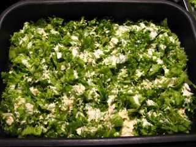
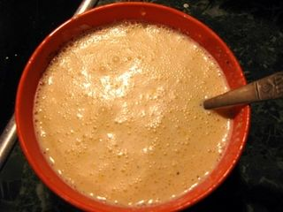
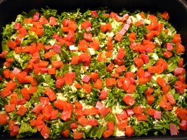
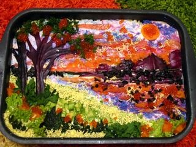
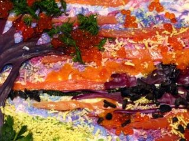
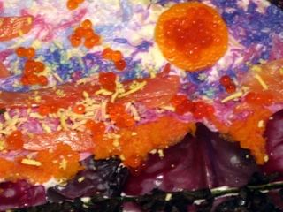
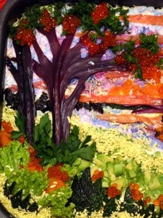
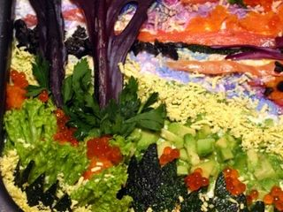
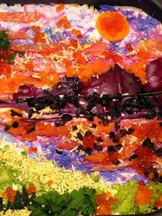

Шаг 1: Предварительная подготовка ингредиентов.

В кастрюлю набираем холодной воды, добавляем в нее промытую морковь и яйца. Ставим на средний огонь. Когда вода закипит, добавляем щепотку соли. Через 10 минут ложкой достаем яйца и заливаем их холодной водой, где они и должны полностью остыть. Морковь же продолжаем варить до полной готовности, пока она не станет мягкой (примерно минут 20). За время пока продукты варятся, подготовим другие ингредиенты. Важно, все продукты готовить в разную посуду, так как салат у нас слоеный. Первым делом, рвем промытый зеленый салат. Можно его, конечно, и порезать, но рваный он всегда смотрится необычно и красиво. Главное не измельчить его сильно. Семгу нарезаем на небольшие квадратики, но не всю. Небольшой кусочек рыбы нужно оставить для украшения. Вообще все ингредиенты салата мы по немного оставляем для украшения. Маслины нарезаем колечками, Твердый сыр натираем на крупной терке. Промытый авокадо нарезаем на две части, не очищая его от кожуры. Ножом резким движением ударяем по косточке так, чтобы лезвие немного вошло в нее, и вытягиваем кость. Далее ложкой вынимаем мякоть авокадо, немного оставляем для украшения, а остальное измельчаем на мелкие кусочки. Яйца очищаем и 4 их них измельчаем на мелкой терке. Половину каждого пучка укропа и петрушки промываем и мелко рубим. Сваренную морковь нужно очистить и протереть на крупной терке.
Шаг 2: Готовим соус для заправки салата.

Апельсин нужно очистить от кожуры и белых прожил. Далее ножом нужно измельчить его мякоть. Смешиваем дольки апельсина с майонезом и тщательно перемешиваем до однородного состояния. Немного солим и перчим. Такой необычный жидкий соус и будет заправкой для нашего салата.
Шаг 3: Готовим салат.

Салат выкладывается в большую прямоугольную форму или на блюдо с бортами слоями. Каждый из них пропитывается соусом. Его легче всего распределять ложкой. Вначале выкладываем рваные листья салата, далее выкладываем кубики красной рыбы. Смазываем майонезным соусом. Далее равномерно выкладываем 4 измельченных на крупной терке яйца и снова заправка. Следующий слой – кружочки маслин. Они вновь перекрываются заправкой. После чего выкладываем тертую морковь и рубленую зелень укропа и петрушки, а также кубики авокадо. Сбрызгиваем все соком лимона и промазываем слой соусом. Последним выкладываем тертый сыр очень плотно. Сверху его хорошо обмазываем майонезом. Салат готов!
Шаг 4: Украшаем салат в виде картины.

Куда ведут ваши мечты? Море это или лесная поляна, а может это космос? Все это вы с легкостью сможете реализовать на поверхности салата, если используете подручные продукты и просторы своей фантазии. Мы лишь покажем вам как это сделать на примере красочной картины природы на закате. А в остальном, все зависит от вас. На нашем салате все делалось следующим образом:

небо и вода голубого цвета – это белки от оставленных нами яиц, измельченных на терке и окрашенных соком свеклы и краснокочанной капусты. Так как элементы прокрашиваются неравномерно, то и картина получается более реалистичной. Для того, чтобы окрасить достаточно белок немного подержать в соке.

Солнце – это цедра апельсина.

Деревья и лес очень красиво смотрятся из краснокочанной капусты. Прожилы капусты делают такие деревья по-настоящему схожими. Вырезать можно по ранее приготовленным картонным формам. Листва на деревьях – это уложенные веточки укропа, а ягоды на них – крупинки красной икры.

Пригорок на картине сделан из зелени и кубиков авокадо, а кусты можно вырезать из насыщенных шкурок авокадо. Их перьев петрушки и зеленого салата также получились красивые кустики. На линии горизонта насыпаны измельченные маслины. В роли песочка у нас измельченный желток куриных яиц.

Цветы и блики на небе также сделаны из красной икры. Полоски рыбы разбавляют закат и на горизонте. Также использовалась для неба тертая морковь и желток. Все это выкладывается на наш салат и вырисовывается очень яркая и необычная картина. Если вы думаете, что у вас так не получится, вы ошибаетесь. Это делается намного проще, чем кажется. Предайтесь своей фантазии и мечтам, и у вас обязательно получится настоящее произведение искусства. Удачи вам!